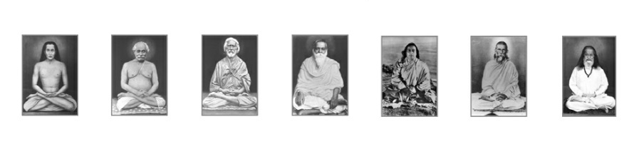

Svabodhya Samaj has given some thought to more organized community action: download.
Svabodhya Samaj is a research laboratory and self-realization waypoint focused on information theory, quantum physics, consciousness studies, Kriya Yoga, publications, teaching, and seva.
Information is Everywhere and Fundamental
...unlike space or time...
Dedicated to God and Gurus, the Svabodhya Samaj Research Laboratory & Self-Realization Waypoint bridges cutting-edge science with ancient wisdom. Our work spans quantum physics, consciousness studies, and the mathematics of reality itself.
Even the vacuum of outer space contains quantum fluctuations; information may therefore be everywhere.
✦ All research paths converge in Integration ✦
Kriya Path - a Path for Householders and Monks

Svabodhya Samaj Kriya Yoga is for monks and householders alike, with no preference. Some masters (Swami Satyeswarananda Giri) emphasized the householder aspect, others emphasized the monastic aspect. Svabodhya Samaj Kriya Yoga promotes balanced living with moderation in all activities. Initiation is a sacred bond between teacher and student and is entered into with divine confirmation. Interest can be expressed in writing.
Five fruits and five flowers, as symbols of the ten indriyas, and a small monetary donation (250 Rs. or 250 USD depending upon the place) are requisites for initiation.
Daily study of the Bhagavad Gita and the major scripture of one's own religion is essential. REAL Kriya is non-sectarian. An attitude of "putting others first" is recommended for cultivation.
Recent News
Svabodhya Samaj's Prajnanabha journal is becoming semi-annual. The next issue will be released in December 2026. Institute-wide, another change that's being formalized is to not allow any AI generated submissions, or content, whatsoever. Permitted scholarly AI use is limited to search engine tool level. However, AI has a bonafide use: as a laboratory to investigate cognition. Other valid use cases will be announced as and when they become pertinent.
Svabodhya Samaj will host a repository of Punjabi and Bangla works. The research post application deadline is extended to August-end 2026.
Svabodhya Samaj is launching a concentrated study of AI ethics as it applies to marginalized peoples. Specifically, we will characterize the impact of AI and its current ethical state on these populations. From this characterization we will draw up an approach to making AI more humane and human-centered and "dharmic." We may not take the extreme posture of rejecting AI since that would be a mistake, but we will argue for a very very strong oversight and system of checks-and-balances for the developing/underdeveloped world. There are very specific issues that come up in this regard. For example, linear rationality is underdeveloped in many poor societies. People rely on co-operation and unselfishness a lot more than in the modern West where AI first arose. The recent announcement by advanced AI companies to "inject" AI into all cellular phones is innocuous on the surface, until one realizes that this will bring the problems outlined above to a head, and rapidly too, within a year or so.
SS releases Version 0.1 of Mars AGI Explorer python simulator: GitHub Repository motivated by Prof. M. Minsky's framework.
SS releases Issue 6 of Prajnanabha for May 2026.
SS reframes its course-offerings through the lens of values-based education.
SS releases Research Training Post #2 with a deadline of May end 2026.
SS releases Issue 5 of Prajnanabha vol 1.
SS releases Issue 4 of Prajnanabha vol 1.
Prajnanabha Volume 1 Issue 3 is released.
SS website includes a credentials section. Svabodhya Samaj's information theory course will be hosted directly on the SS teaching page for cohesive presentation. Svabodhya Samaj's scholarly corpus is updated. Prajnanabha journal page has issue details updated.
SS instantiates a seekers' order. The founder's ideas align most with those of Amit Goswami (no formal relationship). They were exposited in the 2016 monograph: "The Timeless Within."
REAL resolves to pursue the "Campus Ministry" model as part of its outreach. Under this model REAL affiliates will assist students and scholars at university campuses globally.
First paper accepted for Volume 1 Issue 2 of Prajnanabha: Information and Physics.
REAL updates its long term vision to include an order of dedicated seekers. Draft Guidelines
On December 17, 2025 SS observed a minute's silence in respect to Swami Asanganandaji's Shodashi Bhandara at Paramarth Niketan, Himalayas.
Opportunity deadline extended till year-end: SS is hiring a graduate-level researcher (non-paid). Details here.
Prajnanabha Press officially launched with its first book Living Fire.
Prajnanabha Journal is now accepting submissions for Volume 1, Issue 2.
Third paper accepted for Volume 1, Issue 1 of Prajnanabha Journal.
Research Divisions
Quantum Illumination, Sensing and Metrology
Light revealing hidden realities
Exploring how quantum entanglement can illuminate what classical physics cannot see—a metaphor for spiritual insight piercing the veil of maya. More broadly exploring quantum metrology.
View Publications →Quantum Computing, Supercomputing and Communication
Harnessing superposition for transformation
Investigating computational states that exist in multiple configurations simultaneously—mirroring the quantum nature of consciousness itself. More broadly investigating quantum communication systems.
View Publications →Quantum Machine Learning, Devices and Materials
Intelligence emerging from uncertainty
Where artificial intelligence meets quantum mechanics—exploring how learning and consciousness might arise from fundamental quantum processes. More broadly, studying the applications of quantum material science.
View Publications →String Theory
The vibrating fabric of existence
Reality as resonance—studying how the universe's fundamental strings echo the ancient concept of Nada Brahma (sound as ultimate reality).
View Publications →Network Information Theory
How information flows through connected systems
Mapping the mathematics of interconnection—from neural networks to cosmic consciousness, exploring how information binds reality together.
View Publications →Neuron
The biological basis of awareness
Understanding consciousness at its cellular level—how individual neurons give rise to the vast symphony of subjective experience.
View Publications →Unification
Seeking the single truth beneath diversity
The physics quest for a Theory of Everything parallels the spiritual journey toward recognizing the One in the many.
View Publications →Integration
Where science and spirituality become one
The keystone of our research—demonstrating how quantum physics, consciousness studies, and yogic wisdom describe the same underlying reality from different perspectives.
View Publications →Economics
Where science and spirituality enter the practical domain
We study welfare economics and financial economics.
View Publications →The Integration Paradigm
Every research category explores a different facet of the same diamond. Quantum mechanics reveals the participatory nature of observation. String theory suggests reality vibrates like Om. Network theory maps the interconnection mystics have always known. In Integration, these insights converge—showing that scientific inquiry and meditative insight are complementary paths to truth.
This isn't theory. It's practice.
Research Glossary
| Quantum Entanglement | A phenomenon where particles remain connected regardless of distance, instantly affecting each other—similar to how consciousness transcends spatial boundaries in deep meditation. |
| Superposition | A quantum system's ability to exist in multiple states simultaneously until observed—reflecting how awareness can hold paradoxes before conceptual collapse. |
| String Theory | A theoretical framework proposing that fundamental particles are vibrating strings—resonating with the Vedic concept of creation through primordial sound. |
| Network Information Theory | Mathematical study of how information flows through connected systems—applicable to both neural networks and the fabric of consciousness itself. |
| Quantum Machine Learning | Using quantum mechanical principles to enhance artificial intelligence—exploring whether consciousness itself might emerge from quantum processes. |
| Unification | The physics goal of combining all forces into one theory—paralleling the spiritual realization of non-duality (advaita). |
| Observer Effect | The quantum principle that observation affects reality—validating ancient teachings that consciousness and cosmos are inseparable. |
| Integration | The synthesis of scientific and spiritual frameworks into a unified understanding of reality—the culmination of REAL Institute's research mission. |
Experience the Integration
Understanding these concepts intellectually is just the beginning. Direct experience through meditation reveals what equations can only hint at.
Join Our Meditation SessionsWeekly & biweekly silent breath awareness sessions via Zoom
Messages
Read selected messages and reflections connected with Svabodhya Samaj's teaching, practice, and research orientation.
Read MessagesCollected notes for students, seekers, and collaborators
Aims and Objectives
1. To foster the development of meditation practitioners through guidance and training.
2. To foster the study of the scriptures in aid of enlightenment.
3. To promote the spread of the techniques of meditation and enlightenment.
4. To include all religions in the embrace of the teachings.
5. To promote the embrace of age-old religious cultures and traditions.
6. To have a monastic order in the aid of enlightenment-attainment.
Volunteer Work/Seva
“Show compassion to all living beings, develop a taste for the Holy Name, and serve the devotees.” -- Sri Caitanya-caritamrta, Antya-lila 4.192.
sadhu na bhukha jay -- Kabirdas.
Svabodhya Samaj Seva HubREAL also maintains an order for dedicated seekers and committed aspirants.
Svabodhya Samaj OrderSvabodhya Samaj serves all by preserving the vast cultural and linguistic heritage of India.
Svabodhya Samaj Voice of India's HeritageFunding Statement: Svabodhya Samaj aims for a non-profit structure. All our income needed for research is generated via online teaching and voluntary contributions. This enables our research to be completely unbiased and dedicated to the highest standards. REAL Credentials.